A reference for the cleanplots-specific API. Assumes matplotlib familiarity.
import numpy as np
import pandas as pd
import cleanplots as cp
import matplotlib.pyplot as pltEvery plot starts with cp.fig() and ends with
ax.clean().
f, ax = cp.fig() # single axes
f, axes = cp.fig(rows=2, cols=2) # grid
f, (ax1, ax2) = cp.fig(cols=2) # side-by-side
ax.clean(xlabel='X', ylabel='Y') # standard cleanup
ax.clean(ticks=None, spines=None) # no axes (for images)Error representation. err= adds error
visualization (shaded band for lines, error bars for bar/scatter).
Accepts symmetric error, a (lower, upper) tuple, or an Nx2
array. err_label= creates a single shared legend entry.
Legend. clean() builds the legend
automatically. Pass legend=False to any plot call to
suppress it entirely. ax.get_legend().set_loc('upper left')
repositions after clean().
Color labels. clean() automatically
replaces multi-color legend entries with colored text. To place
manually:
ax.color_labels(['MLP', 'RF', 'Transformer'], x=0.05, ha='left')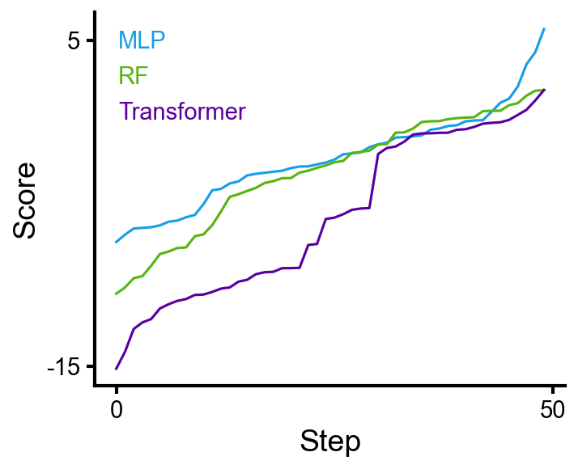
Starting from tidy per-epoch data:
model seed epoch train_loss val_loss
0 MLP 0 0 2.41 2.55
1 MLP 0 1 2.18 2.33
...
60 Transformer 0 0 1.95 2.08
...Collapse over seeds — the resulting DataFrame has MultiIndex columns.
The top level (metric) maps to line styles, remaining
levels map to colors:
mean = cp.data.collapse(df, 'epoch', ['train_loss', 'val_loss'], over='seed', func='mean')
std = cp.data.collapse(df, 'epoch', ['train_loss', 'val_loss'], over='seed', func='std')metric train_loss val_loss
model MLP Transformer MLP Transformer
epoch
0 2.41 1.95 2.55 2.08
1 2.18 1.72 2.33 1.86
2 1.97 1.51 2.14 1.66
...f, ax = cp.fig()
ax.line(mean, err=std, err_label='±1 SD')
ax.clean(ylabel='Loss')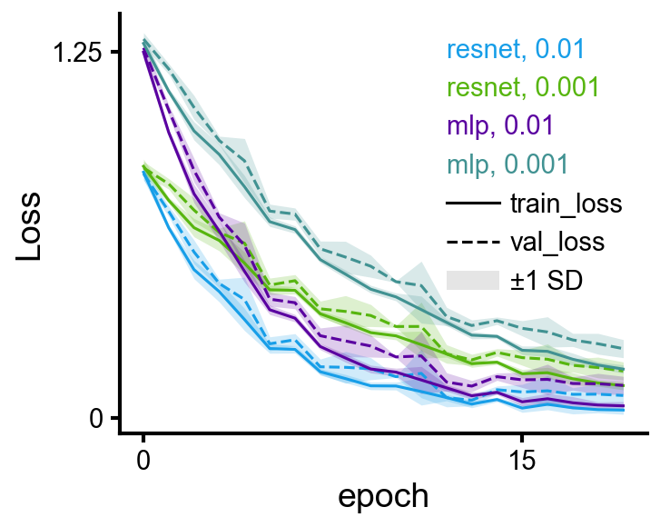
Use cp.data.slice to filter by any column level:
ax.line(cp.data.slice(mean, model='MLP'), err=cp.data.slice(std, model='MLP'))When color= and label= are both set on a
DataFrame, you get one color legend entry plus shared linestyle
entries:
wide = cp.data.to_wide(df, 'epoch', ['train_loss', 'val_loss'])
for i, model in enumerate(['small', 'medium', 'large']):
ax.line(cp.data.slice(wide, model=model), color=cp.colors[i], label=model, alpha=0.5)For raw arrays (e.g. RL reward curves):
ax.line(runs, color=cp.colors[0], alpha=0.3, label='Runs')
ax.line(np.mean(runs, axis=0), color=cp.colors[0], lw=2, label='Mean')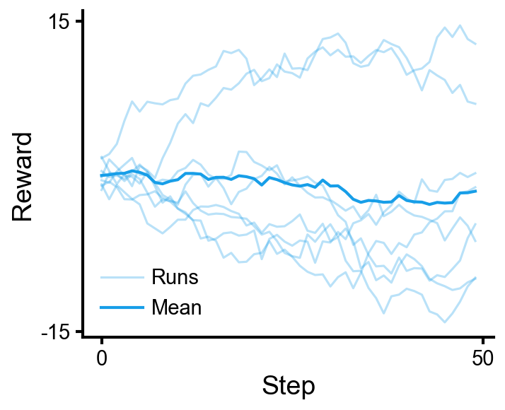
Starting from tidy per-seed metrics:
model seed precision recall f1
0 random_forest 0 0.92 0.88 0.90
1 random_forest 1 0.90 0.86 0.88
...Collapse over seeds:
mean = cp.data.collapse(df, 'model', ['precision', 'recall', 'f1'], over='seed', func='mean')
std = cp.data.collapse(df, 'model', ['precision', 'recall', 'f1'], over='seed', func='std')Result — index becomes x-axis categories, columns become colored groups:
metric precision recall f1
model
gradient_boost 0.88 0.92 0.90
logistic 0.82 0.85 0.83
mlp 0.94 0.90 0.92
random_forest 0.91 0.87 0.89f, ax = cp.fig()
ax.bar(mean, err=std, err_label='±1 SD')
ax.clean(ylabel='Score')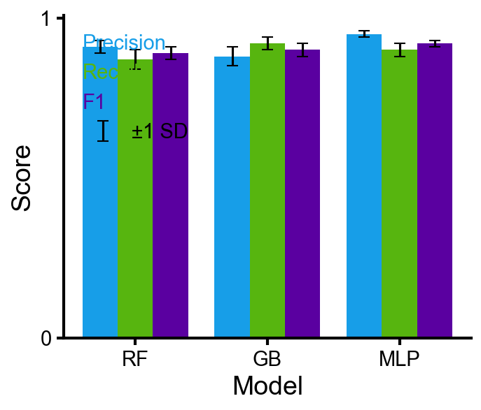
For a single metric, collapse returns a Series. Pass
directly to barh:
mean = cp.data.collapse(df, 'feature', 'importance', over='seed', func='mean')
std = cp.data.collapse(df, 'feature', 'importance', over='seed', func='std')mean importance
feature
feature_0 0.15
feature_1 0.08
feature_2 0.12
...f, ax = cp.fig()
ax.barh(mean, err=std)
ax.clean()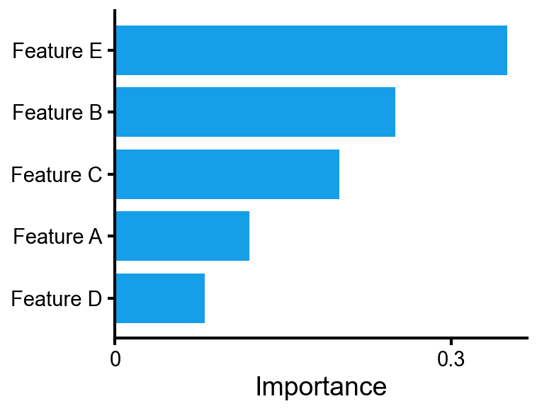
An Nx2 DataFrame splits into x, y with column names as axis labels:
ax.scatter(df[['PC1', 'PC2']], s=15, alpha=0.6)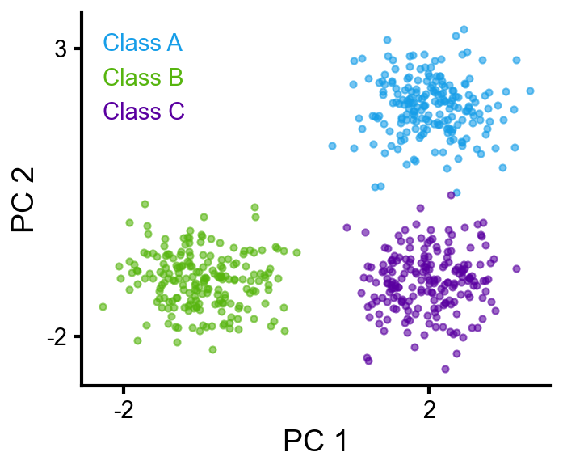
yerr= and xerr= add error bars:
ax.scatter(x, y, xerr=xerrs, yerr=yerrs, label='Model A',
xerr_label='time uncertainty', yerr_label='accuracy uncertainty')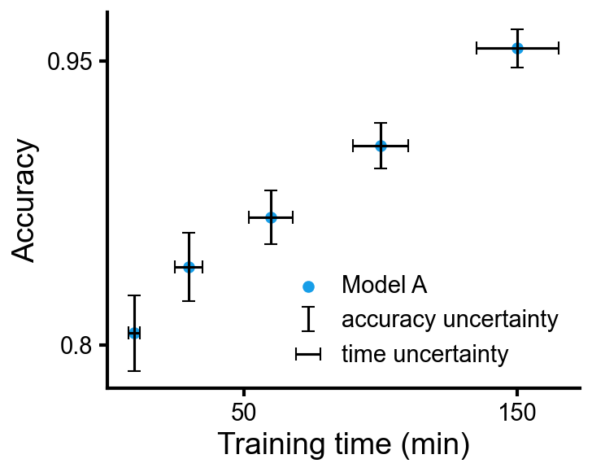
group= assigns colors from the cycle and creates legend
entries:
ax.scatter(df['x'], df['y'], group=df['class'],
edgecolors=cp.cmaps.inferno(df['confidence']), linewidths=1.5)
cb = ax.add_colorbar(cp.cmaps.inferno, values=df['confidence'])
cb.set_label('confidence')ax.add_colorbar(cmap, values) creates a colorbar from a
colormap and the data values that were mapped through it. Works on any
axes.
cb = ax.add_colorbar(cp.cmaps.inferno, values=data) # range from data
cb = ax.add_colorbar(cp.cmaps.inferno, vmin=0, vmax=1) # explicit range
cb.set_label('confidence')
cb.set_ticks([0, 0.5, 1])Starting from tidy cross-validation results:
C gamma fold test_accuracy
0 0.01 0.001 0 0.71
1 0.01 0.001 1 0.73
...Collapse over folds — index and columns become axis labels automatically:
mean = cp.data.collapse(df, 'gamma', 'test_accuracy', over='fold', func='mean')
std = cp.data.collapse(df, 'gamma', 'test_accuracy', over='fold', func='std')mean test_accuracy
C 0.01 0.1 1.0 10.0 100.0
gamma
0.001 0.72 0.74 0.78 0.82 0.79
0.01 0.73 0.76 0.83 0.90 0.85
0.1 0.71 0.73 0.77 0.81 0.78
1.0 0.70 0.71 0.72 0.73 0.72Custom annotation strings:
annot = mean.round(2).astype(str) + '±' + std.round(2).astype(str)
f, ax = cp.fig()
ax.heatmap(mean, annot_strings=annot, cmap='Blues')
ax.clean(ticks=False, spines=None)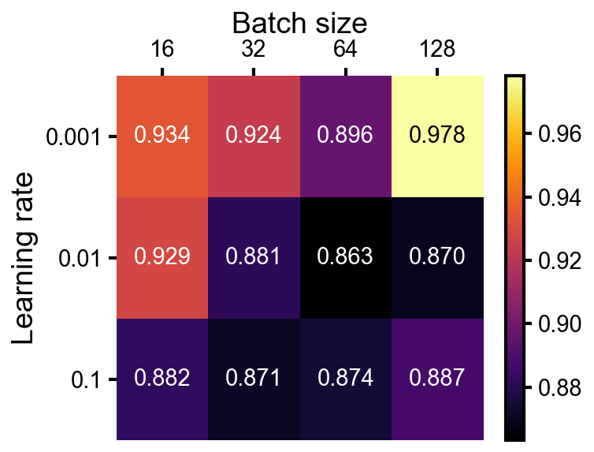
heatmap returns the Colorbar object so you
can set label/ticks directly:
cb = ax.heatmap(data, cmap='Blues')
cb.set_label('Count')
cb.set_ticks([0, 25, 50])f, ax = cp.fig()
ax.heatmap(conf_matrix, fmt='d', cmap='Blues')
ax.clean(ticks=False, spines=None, ylabel='True', xlabel='Predicted')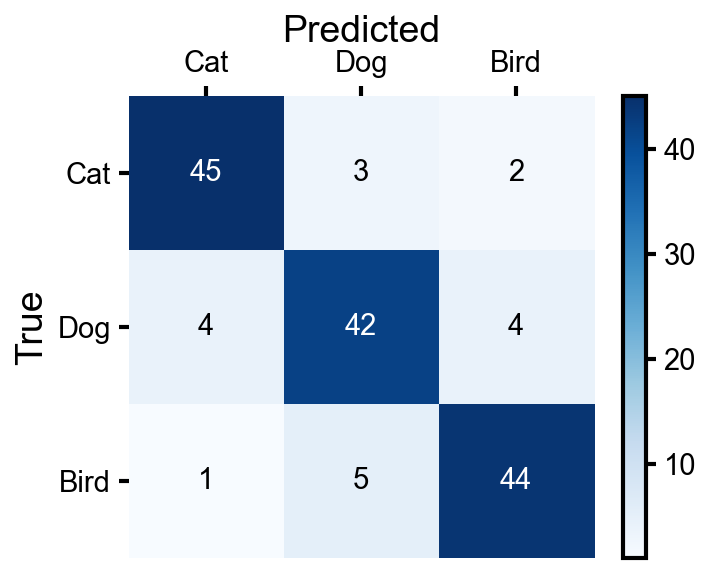
To show raw data points per group (as an alternative to a grouped bar
chart), use collapse with func=list to collect
values into arrays:
df = cp.data.collapse(data, 'model', ['precision', 'recall', 'f1'], over='seed', func=list)Result — index becomes x-axis categories, columns become colored
groups (same convention as bar):
metric precision recall f1
model
gradient_boost [0.88, 0.87, 0.89, ...] [0.92, 0.91, 0.93, ...] [0.90, 0.89, ...]
logistic [0.82, 0.81, 0.83, ...] [0.85, 0.84, 0.86, ...] [0.83, 0.82, ...]
mlp [0.94, 0.93, 0.95, ...] [0.90, 0.89, 0.91, ...] [0.92, 0.91, ...]
random_forest [0.91, 0.90, 0.92, ...] [0.87, 0.86, 0.88, ...] [0.89, 0.88, ...]ax.strip(df) # or ax.box(df), or ax.violin(df)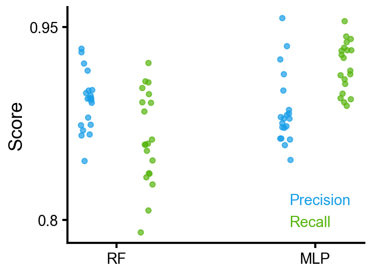
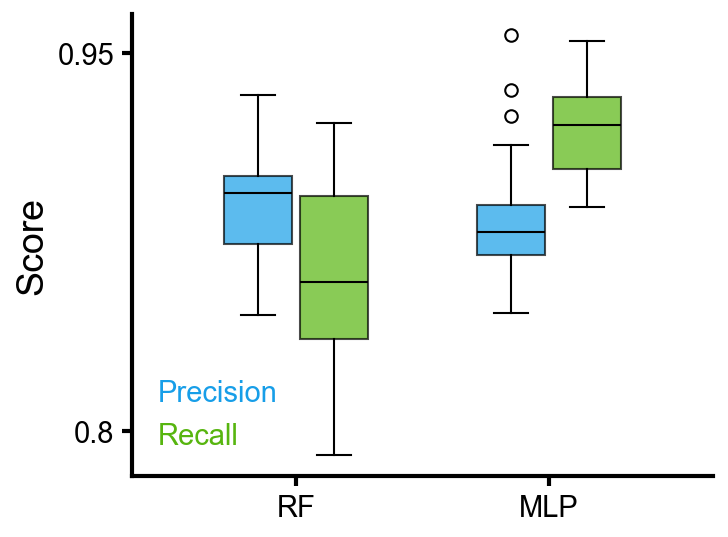
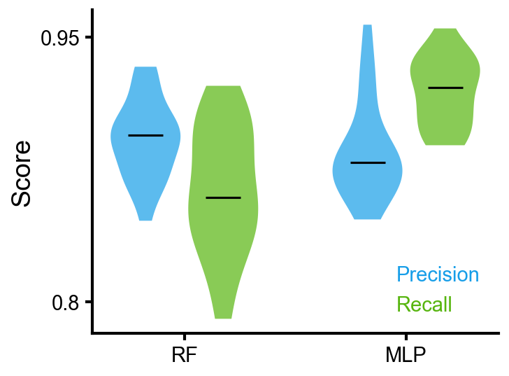
A dict of group name → array shows one group per x position in a single color:
data = {'LR': scores_lr, 'RF': scores_rf, 'GB': scores_gb, 'MLP': scores_mlp}
ax.box(data) # or ax.violin(data), or ax.strip(data)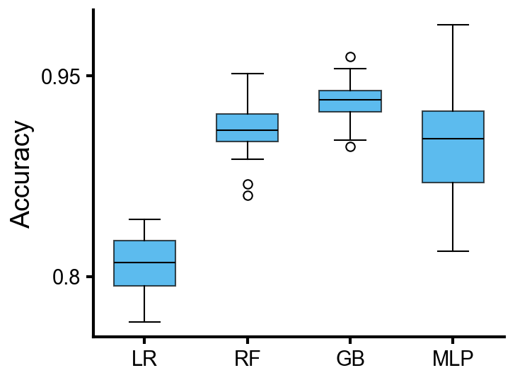
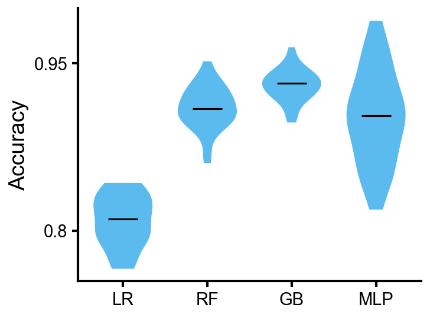
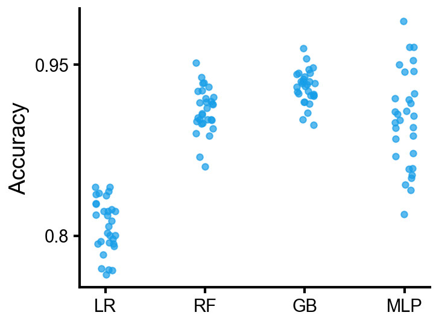
Overlaid histograms with shared bins.
histtype='stepfilled' and alpha=0.5 by
default.
ax.hist([baseline, tuned, ablation],
label=['Baseline', 'Tuned', 'Ablation'],
bins=40, density=True)
ax.clean(xlabel='Prediction error', ylabel='Density')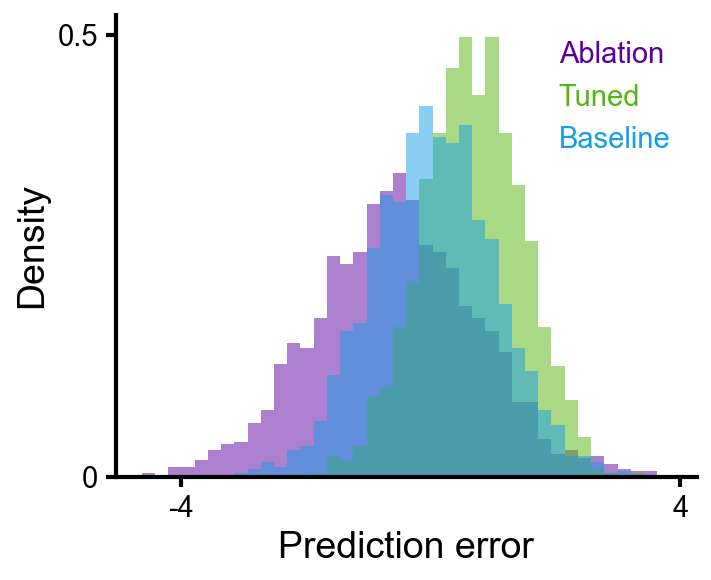
log_x=True gives log-spaced bins on a log x-axis.
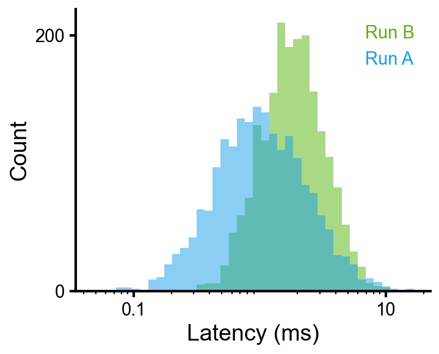
f, axes = cp.fig(rows=2, cols=2)
axes[0, 0].line(loss); axes[0, 0].clean(ylabel='Loss', xlabel='Epoch')
axes[0, 1].bar(['A', 'B', 'C'], vals); axes[0, 1].clean(ylabel='Accuracy')
axes[1, 0].scatter(embeddings, s=20); axes[1, 0].clean(xlabel='PC1', ylabel='PC2')
axes[1, 1].box({'M1': s1, 'M2': s2}); axes[1, 1].clean(ylabel='Score')
f.tight_layout()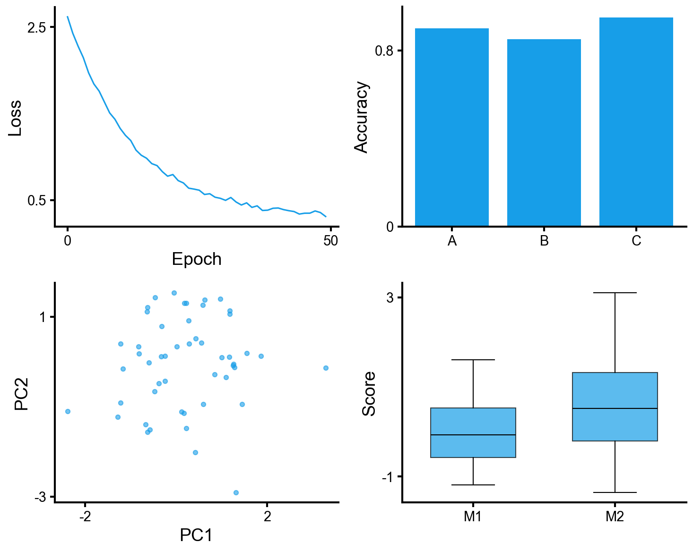
f.subplots_adjust(hspace=0.55, wspace=0.45) # when labels overlap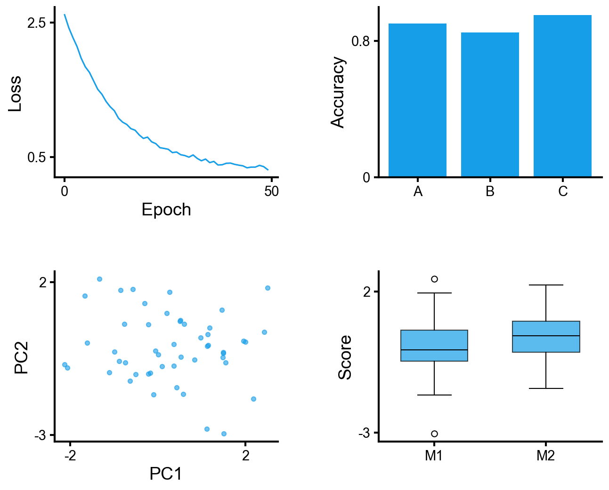
cp.data)Helpers for the tidy → wide → aggregated pipeline. Loud errors over
silent wrong numbers (uses pivot, not
pivot_table).
# One-step: pivot + aggregate
mean = cp.data.collapse(df, index='epoch', values=['train_loss', 'val_loss'],
over='seed', func='mean')
# Two-step equivalent:
wide = cp.data.to_wide(df, index='epoch', values=['train_loss', 'val_loss'])
mean = cp.data.agg_over(wide, col_level='seed', func='mean')
# Filter by column level
cp.data.slice(mean, model='resnet')
cp.data.slice(mean, metric='train_loss', lr=0.01)Access via cp.cmaps.<name>.
| Category | Default | Other options |
|---|---|---|
| Sequential |
inferno |
plasma
viridis
magma |
| Diverging | RdBu |
coolwarm
PiYG |
| Binary | gray |
— |
| Categorical |
categorical |
(built from cp.colors) |
| Cyclic | phase
(cmocean) |
— |
Matplotlib features that cleanplots doesn’t wrap. Work on any
CleanAxes (it’s an Axes subclass).
ax.tick_params(axis='x', rotation=45)
plt.setp(ax.get_xticklabels(), ha='right')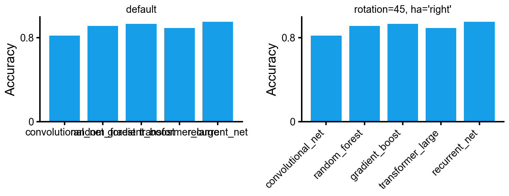
ax.annotate('best',
xy=(150, 0.93), xytext=(100, 0.80),
fontsize=11,
arrowprops=dict(arrowstyle='->', color='gray', lw=1))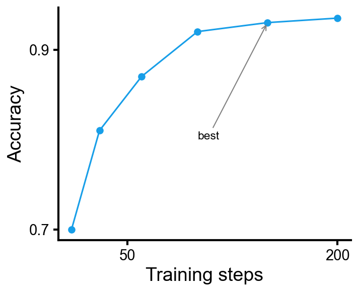
ax.set_aspect('equal')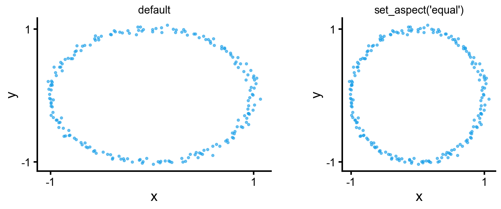